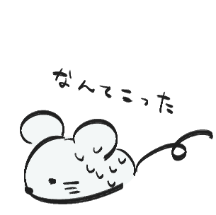

<!DOCTYPE html>
<html lang="ja">
  <head>
    <meta charset="UTF-8" />
    <meta name="viewport" content="width=device-width, initial-scale=1.0" />


    <!-- 必要なライブラリをネット上から直接参照 CDN -->
    <script src="https://code.jquery.com/jquery-3.5.1.min.js"></script>
    <link rel="stylesheet" href="https://cdn.rawgit.com/filipelinhares/ress/master/dist/ress.min.css"/>
    <!-- 自分のcss -->
    <link rel="stylesheet" href="./css/style.css" />
    <!-- 自分のjs -->
    <script src="./js/script.js"></script>
    <title>index</title>
  </head>
  <body>
 <!-- コンテンツ -->

 <div id="cursor"></div>  <!-- imgタグを設定 -->

 <script src="https://code.jquery.com/jquery-1.12.4.min.js" type="text/javascript"></script>
 <script src="./jquery.arctext.js" type="text/javascript"></script>
 <div id="stalker"></div>


  <div class="first"></div>
  <div class="second"></div>
  <div style="text-align: center;">

    <div class="shake-little">
      <p>
        <a href=https://kids.yahoo.co.jp/study/integrated/environment/env015.html><div style="text-align: center;">
        </a></p></div>
      　<br>
      <br>
      <br>
      <br>
      <br>
      <br>
  
    <link rel="stylesheet" type="text/css" href="csshake.min.css">
    <!-- or from surge.sh -->
    <link rel="stylesheet" type="text/css" href="https://csshake.surge.sh/csshake.min.css">
    <div class="shake"></div>
  </body>
<body>
  <div class="shake-hard"><p>
    <a href="https://www.inaba-petfood.co.jp/product/name/cat/CIAO+%E3%81%A1%E3%82%85%EF%BD%9E%E3%82%8B"> </a></p>
    </div>
  </body>
  <body>
    <div class="shake-crazy">
    <p>
      <a></a>
        </a></p>
        </div></p>
  </div>
    <p style="margin-bottom:20px">
      　<br>
      <br>
      <br>
      <br>
      <br>
      <br>
      </p>
     <!-- To include only some csshake animations use this syntax -->
<link rel="stylesheet" type="text/css" href="csshake-slow.min.css">
<!-- or from surge.sh -->
<link rel="stylesheet" type="text/css" href="http://csshake.surge.sh/csshake-slow.min.css">
  </div>

</body>
</html>
